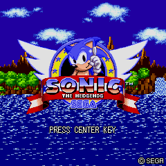

| |
||
|
■ 世界最速のハリネズミ、ついに携帯アプリに登場!! ■ 91年にメガドライブで発売された『ソニック・ザ・ヘッジホッグ』を全6ゾーン完全移植。 |
||
|

|
|
| ■ あそびかた |
|  |
[ゲームスタート] ゲームを開始します。また「途中から始める」で最後にクリアしたステージから再開することも出来ます。 [ステージセレクト] [ランキング] |
| ■ 操作方法 |
 |
[左右キー]ソニックの左右移動(押し続けると加速) [上キー]ジャンプ [下キー]しゃがむ(ダッシュ中はスピン) [決定キー]上を見る ジャンプ中やスピン中など､ソニックが丸まっている状態で敵に接触すると､敵を倒すことができます。 |
| ■ ゲームの流れ |
 |
ステージは６つの「ゾーン」に分けられており、さらにそのゾーン内にアクトと呼ばれる小ステージが存在します。 |
| ■ 攻略の秘訣 |
 |
リングを持っていないときにエネミーなどからダメージを受けると、ミスになってしまいます。 |
<<戻る>>
© SEGA